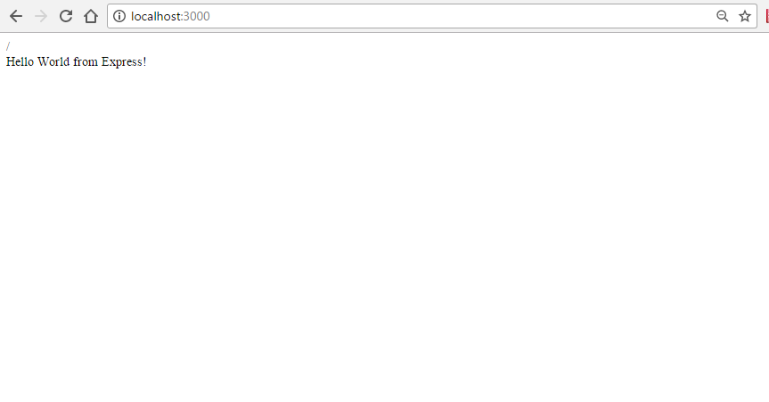

Node.js is an open source server framework which is built on top of the JavaScript V8 engine mostly used for
web development - specially for network intensive single page apps, it is free, cross-platform and
uses one of the most popular programming language - JavaScript
Features
The following are the most popular feature why Node JS is used:
Asynchronous and Event Driven
With the advent of the web there needs to be some kind of way to execute tasks upon receiving them,
in
the past this is done sychornously, meaning you need to wait for a certain code to finish before you
can
execute another task, though this can be mitigated by using Threads in some languages, a more
powerful
approach that Node is built upon is that all of its library API was built asychronous first and an
event
driven mechanism. Meaning for instance in reading a file you don't need to wait for that block of
code
to
finish before moving through the next one.
var fs = require('fs');
fs.readFile(function(err, data){
console.log('data');
});
console.log('This will be executed first, depending on the size of the file');
Its Fast!
As noted above Node js is built on top of the V8 and there is no question that the V8 engine is one
of
the
best JavaScript engine out there in terms of speed
Single Threading
Node uses a single threaded model with event looping. Meaning there are no threads in Node, it
accomplishes
tasks -again - in an event driven fashion in a asychronous way. In a way this model can serve a much
larger request pool
than the traditional Threaded model such as being used on Java or Apache (Php) servers
More information can be found on this
stackoverflow thread
License
Node.js is published under an MIT license which means it is free and open source and can be used
commercially without charge
Who uses Node?
Even still at it's infancy Node is now being used by companies such as:
Netflix
New York times
Paypal
Yahoo
LinkedIn
Uber
Requirements
In order to start developing using Node we need to install the node js package. As discussed above Node is
cross-platform it is available on Windows, Mac and Linux. You can acquire the latest version of node
here:
After installation you can go to your command line and confirm the node installation:
$: node -v
It should print your node version
v6.9.1
Node Package Manager (NPM)
After the node installation, you will notice that if you type npm on your command line node
actually installed npm. NPM is the built-in package manager for node, and with npm you can install modules
which
are available on the npm website. NPM acts like the other package managers out there such as composer,
rubygems, and maven but for installing Node.js packages. For instance if you want to install the package
nodemon - which is a daemon which reloads the server when changes are made - you just type
npm install nodemon
This automatically generates a node_modules folder which then contains the installed package.
NPM is also a dependency management tool which means if nodemon is dependent on other modules it
automatically installs those modules for us
Hello from Node!
In this section we take a look on how simple it is to construct the famous hello world using node.
app.js
console.log("Hello World!")
To run using the command line:
$: node app.js
Hello World!
In the next section we talk about how to use the http module to create the same Hello World but with a web
server.
Modules
The Node core API is a small fish in comparison to the more mature programming languages out there such as
Java, Php, Ruby and .Net, but here comes modules for the resuce. A module in node is simply a fancy way of
saying libraries
which just contains a set of functions or objects that you can include in your application. The beauty of
this is that there are modules for almost anything that you want to do in Node these days, because of Node's
openness. There are the built-in modules, modules created by the ecosystem and lastly modules that can
be created by us - the developers.
Including modules
We are accustomed using Java in our university and we do inclusion of files using the import
statement.
In node there is this equivalent function called require, which is used to "require" other
modules or files
Including built-in or installed modules via npm
// This includes the file system module
var fs = require('fs')
// requiring the express module
var express = require('express');
Node.js Built-in modules
There are a lot of built-in modules in node below are the most common one's. The full list can be viewed here
assert
Module for asserting tests
crypto
Module for handling OpenSSL encryption
fs
File system - reading and writing files
http
Module for creating a HTTP server
https
Module for creating a HTTPS server
net
Module for creating network servers and clients
querystring
Module for handling URL query strings
url
Module for parsing URL a string
util
Utility functions
zlib
Module for compressing/decompressing files
The http module
The http module is a built-in module that you can use to create a simple HTTP web server. To include this
module you do:
var http = require('http');
The http module has plenty of methods, but for the basics let's use the createServer()
and the listen() methods
// require the built in http module
var http = require('http');
//create the server
var myServer = http.createServer(function (req, res) {
// To write headers
res.writeHead(200, {'Content-Type': 'text/html'});
// Get the req parameters using the req variable
res.write(req.url);
res.write('Hello World from Express!'); //write a response to the client
res.end(); //end the response
});
myServer.listen(3000); // Have the port listen to port 3000
If we run our browser to port 3000 we see this

This is just a simple way to demonstrate how Node can be a web server and at the same time a web framework.
In the next section we go through Express which is arguably the most popular web framework for Node
Express JS
In the previous section it was discussed that Node has it's own module for creating web sites, but it can
get a little messy when it comes to complicated sites. The solution is to use a Web Framework to abstract
and have it a little bit easy to make web applications
Express is built on top of node so every functionality of Node can be used in an express
app,
the basics can be as followed:
First install express on your app
npm install express
Then on our app.js
// Require express
var express = require('express')
var app = express() // instanstiate the app
app.get('/', function (req, res) {
res.send('Hello World from Express!')
})
// Let the app listen to port 3000
app.listen(3000, function () {
console.log('Example app listening on port 3000!')
})
As we can see above this is quite similar to the http module, except for the .get portion. Now
we
have the http methods built into express so we don't need to manually do it ourselves using the http module.
Now
for instance we wanted a post request on a given url we can just do this
app.post('/submit', function (req, res) {
// do code
})
But offcourse we need to get the request parameters from the post request. In the past versions of express
there
is a built in module to do this - body-parser. But to modularize the modules they separated
this
into a module. We need to install this to parse the parameters
Now in the server we use the installed body-parser
var bodyParser = require('body-parser')
app.use( bodyParser.json() ); // to support JSON-encoded bodies
app.use(bodyParser.urlencoded({ // to support URL-encoded bodies
extended: true
}));
app.post('/submit', function (req, res) {
// To retrieve the parameters
var username = req.body.username;
var password = req.body.password;
// ... do something with the variables
})
As we can see there are a lot of things that are simple to do when using a framework such as express. There
is so
much more to this especially using the more advanced modules available in the NPM. This is just the top of
the
iceberg of what can be accomplished using Express.
Database Connectivity
MongoDB using the mongodb module
Like coffee and creamer Mongodb and Node are meant for each other. Node uses JavaScript, JavaScript uses
JSON (JavaScript Object Notation) and MongDB although not the same, uses similar functions, syntax and
approaches in connecting to the database
First we need to install the required module
npm install mongodb
Assuming that your mongodb server is running and we have the following credentials and database, we can do
the following to get all the records
// Require mongo and assert(Optional)
var MongoClient = require('mongodb').MongoClient
, assert = require('assert');
// Connection URL
var url = 'mongodb://localhost:27017/webtek-database-finals';
// Connect to the server
MongoClient.connect(url, function(err, db) {
assert.equal(null, err);
console.log("Connected correctly to server");
var findDocuments = function(db, callback) {
// Get the documents collection
var collection = db.collection('registration');
// Find some documents
collection.find({}).toArray(function(err, docs) {
assert.equal(err, null);
console.log("Registration records");
// print like a minitature DOM
console.dir(docs);
});
}
db.close();
});
This is how we connect and retrieve from a MongoDB database. It may look like a mess at first because of the
callbacks but this is a fairly JavaScript issue and not a Monog one. The following are resources that we
can use for further reading:
Although not use as much easier and used with Node, we attest to the fact that MySQL is still arguably one of
the most used database with all the databases. In node we can connect it to a mysql server using the
lightweight, 100% JavaScript module - mysql
First let's install the required module
npm install mysql
After installation, with the assumption that we have a mysql server running and with the credentials below we
can use it as follows:
// require the module
var mysql = require('mysql');
// create the connection parameters
var connection = mysql.createConnection({
host : 'localhost',
user : 'root',
password : '',
database : 'webtek-database-finals'
});
connection.connect();
connection.query('SELECT * FROM registration', function (error, results, fields) {
if (error) throw error;
// The results are converted in a familiar JSON format
console.log('The database results: ', results);
// So if we want the first of the results
console.log("The first result: " + results[0].fname);
});
// close the connection
connection.end();
As you can see it is fairly easy and straightforward to integrate node with a mysql database. For more
information in the use of MySQL we can consult the documentation here